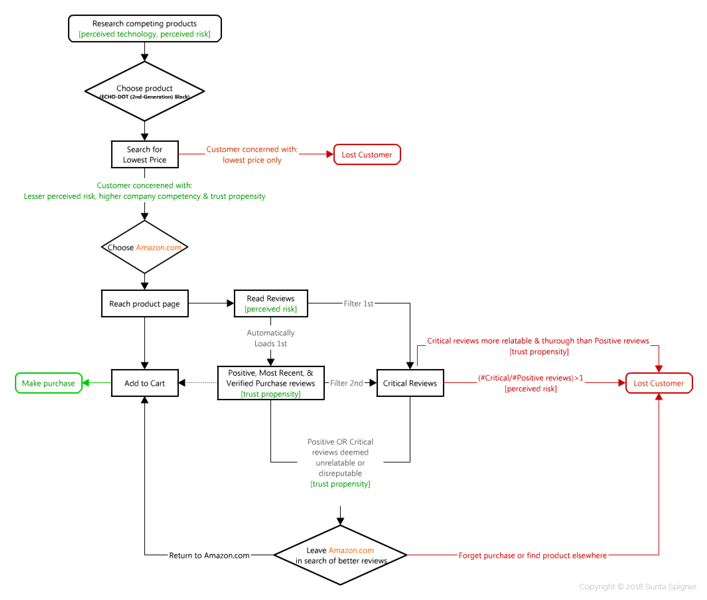

NEW AMAZON CUStomers leave items in their cart longer BEFORE PURCHASING OR REMOVING THEm
The following is a fictional scenario intended only to demonstrate my process of applying UX principles to business problems.
All design solutions, figures, and research detailed below is my own.
I am not affiliated with the following company in a design or research capacity.
How can different archetypes of the online consumer illuminate ways Amazon can encourage swifter purchases & buyer retention?
The purpose of background research is to better understand the problem, what solutions have been applied in the past to remedy it. The benefit of this step is informing a research strategy that is innovative, but well justified.
This process can involve synthesizing information from an informational meeting with stakeholders, brainstorming,internal data collection, internal/external research using third parties, or reviewing existing scholarly studies.
Below is an example of how a literature review of existing scholarly studies can be combined with an informational meeting with stakeholders to collect background for our research question.
Literature Review
1. Solomon, M., Russell-Bennett, R., & Previte, J. (2012). Consumer behaviour. Pearson Higher Education AU.
Select Consumer archetypes from this study can be summarized as…
- “Innocent Consumer” keeps it simple, sticks with the brand/company they can trust for a familiar, uncomplicated experience
- “Explorer Consumer” tries new things, likely to try new brands/companies
- “Sage Consumer” consistently seeks information to inform their decisions (purchases)
- “Hero Consumer” high morality, makes purchases based on their knowledge of the brand/company’s integrity rather than just the product
2. Yu‐Hui Chen, Stuart Barnes, (2007) "Initial trust and online buyer behaviour", Industrial Management & Data Systems, Vol. 107 Issue: 1, pp.21-36, https://doi.org/10.1108/02635570710719034
Select buyer decision factors from this study can be summarized as…
- “Trust propensity” inclination of the consumer to trust a company, diluted by “insufficient information” or unfamiliarity with either the product or company.
- “Perceived risk” likelihood of hardship the user (thinks they) will incur if they make the wrong decision.
Informational Meeting
Conferring with stakeholders who have created/are familiar the interface can illuminate design reasoning, and sprinboards for inquiry...
“I remember the Head of Consumer Insights wanted it that way based consumer feedback”
“The Global Experience Team conducted a re-design a while ago, but I am not sure the status of it now”
Perhaps the meeting illumainates overwhelming concern over the current buyer retention strategies (SB & CRM retargetting) not adressing the newer Amazon customers. These strategies (defined below) can be ignored,lost in spam, or ad-blocked:
- Site-Based re-targeting (tagging the visitor with a cookie to suggest “Recently Viewed” or “Others Purchased” items).
- CRM re-targeting reels the visitor back onto the site via email (“Coupon codes”, “Sales”, “Left in your Cart”, “Saved items” etc.).
The following exemplify potential hypothesis informed by the above background research, using the Echo-Dot as the item in the cart.
- If most consumers are “Explorers” then they are leaving the site to try out other companies selling same/similar products to the Echo Dot.
- If most consumers are “Sage” then they are leaving the site to looking for more reviews, similar products, or better prices on the Echo Dot because they want to minimize the “perceived risk” of choosing the wrong product or company to buy from.
- If most consumers are “Hero” then they are leaving the site to look for more reputable reviews, or because they do not “trust” Amazon.com.
- If the current buyer retention strategy only addresses the “Innocent” consumer archetype, the rest of the archetypes might constitute the percentage of buyers who abandon the cart/site because each have needs not currently addressed by the site.
Whe putting together an investigation plan I want to ...
- Pin-point what questions are relevant to this inquiry.
- Clarify or extend takeaways from the informational meeting.
- Insert concepts from existing scholarly studies.
- Implore qualitative explanations from quantitative data.
- Confirm or dispel the current hypothesis (is the user able to do what I am suggesting?)
- Know the limitations of ideation, so I do not suggest something impossible to implement.
- Don't re-invent the wheel. Check if stakeholders have already conducted similar research or already have collected relevant data.
Potential Interview or Task Questions:
- How long have you been using Amazon.com?
- What devices do you use to add items to your cart? (phone, voice-device, desktop, tablet, etc..)
- Could you walk through the last time you bought a smart-home product?
- Show me what recources you would use to decide on a smart-home device like the Echo-Dot?
Based on user interviews & observations, identify & group experience characteristics. Below are groups "Traditional Consumer" and "New Consumer", designating those whose needs are met by the site, and those whose are not respectively.This will help us highlight where the system needs to be improved.
Traditional Consumer ("Innocent")
Innocent & Trusting Example: Prime member Parkavi completed her purchase the fastest, leaving the Echo Dot in her cart for only 5 minutes before confirming her order.
Steps:
- Goes to Amazon.com
- Searches product
- Lands on product page
- Reads Amazon.com User Reviews
- Adds product to cart
- Completes Purchase

New Consumer ("Distrusting")
Distrusting Sage Explorer Example: Dan left the site in search of more reputable reviews because they did not trust the ones on Amazon. So, they are “Sage/Explorer” Personas whose actions were influenced by inadequate “trust propensity.”
Distrusting Hero Example: Jesse filtered the reviews by most helpful, then by lowest rating, and then left the site before returning and emptying cart 6 days later.
Steps:
- Researches/Compares competing products
- Search examples: “Top Voice Controlled devices”, “Home Assistant Comparison”, “Best smart Speaker”, “ Amazon Echo vs. Google Home vs. Apple HomePod” etc.. [+-perceived technology, +-perceived risk(1)]
- Chooses ECHO-DOT (2nd-Generation) Black
- Searches for lowest price. Ex: Google “Shopping” search engine:
- LOST CUSTOMER
As shown in the slider below-left, Amazon’s listing of the product doesn’t even make it on the first page when the user sorts by ‘lowest total price’ on Google.com. Therefore at this point in the user-flow, the customer who is most concerned with price would already be lost…
Thankfully, research literature tells us that online consumers also factor in “perceived risk, company competency, and trust propensity”(2) alongside price. Amazon excels at these over other vendors, so, we can proceed with an Amazon-savvy customer…
- LOST CUSTOMER
- Finds product on Amazon.com
- Reads Reviews [+-perceived risk]
- Positive, Most Recent, & Verified Purchase reviews [+-trust propensity] load first.
- Reads “Critical Reviews”
- LOST CUSTOMER if...
- Ratio of critical to postive reviews too high[+perceived risk]
- Positive reviews deemed too short or fake looking [-trust propensity]
- Negative reviews more relatable than positive reviews [-trust propensity]
- Leaves Amazon.com to find reputable, relatable reviews of the product ex/Youtube, blogs, etc.
- LOST CUSTOMER
Forgotten purchase. Unlike the “Innocent” Consumer, this archetype is likely a new customer, thus does not have an account or email they can be CRM re-targeted through.
- LOST CUSTOMER
By identifying the motivations behind each "LOST CUSTOMER" scenario above, we can now infer that a potential solution should:
Reduce the customer’s motivation to leave Amazon.com
in search of Thorough, Reputable, and Relatatble reviews
Decrease Fake Reviews
- Inhibit members from writing reviews until they make at least X number of verified purchases from different vendors. Untrustworthy reviewers either have only one review, or were sponsored the same/multiple products from the same company in exchange for short, similar sounding, ‘fake’ five-star reviews [+company competency, +trust propensity]
Add Option to Sort Reviews by “Most Helpful”
- Those leaving Amazon.com are often in search of reviews that will be the most helpful in making the final decision to purchase. Thus, a "Most Helpful" tag will allow customers to rank reviews as helpful (thurough, reputable,relatatble, accurate etc.) as well find these via sort, keeping them on the site [+trust propensity]
Add Reviewer “Also Reviewed” tab that shows similar products the reviewer reviewed
- If they rated lower a competing product, it will reconfirm ECHO-DOT (2nd-Generation) Black is the best option based on the same criteria of the same reviewer. This reduces the need to leave the site and look for comparison review [+trust propensity]
- If they also rated high an add-on to this product ex/ Bluetooth Speakers, Smart Wireless Light Bulbs, Smart Thermostats etc., it will motivate the consumer to purchase these products too.
- Improves RELATABILITY (they have similar interests) & REPUTABILITUY of their review (they are a real person) [+trust propensity]